| 日付 | 2024年10月20日（日） |
|---|---|
| 山域 | 道志山塊 |
| メンバー | 単独 |
| 山行形態 | 日帰り |
| アクセス | 電車 |
| ルート (Map) | 禾生駅 (9:03) - (10:26) 九鬼山 (10:35) - (12:18) 御前山 (12:48) - (13:40) 猿橋駅 |
2ヶ月半振りの山登り。
家族の入院、子供の用事、8月から続いた咳の影響などで長い間山から遠ざかっていた。
一度遠ざかると行くのが億劫になるのだが、このままだと出不精になってしまうため、
重い腰を上げて山に向かうことにする。
あまり気合は入らず、軽い山、電車のみで行ける山から選ぶことにする。
禾生駅に到着。標高420m。
電車は中央線も富士急も、そこそこ登山者が乗っていた。
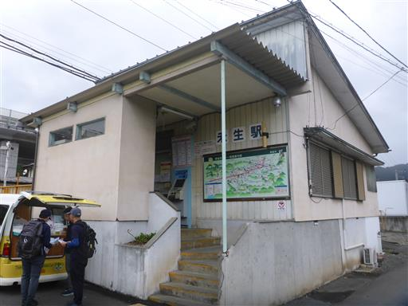
九鬼山に登るといつも眺める落合水路橋。
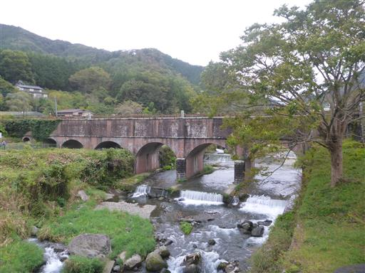
登山口にある愛宕神社。軽くお参りしてから出発する。
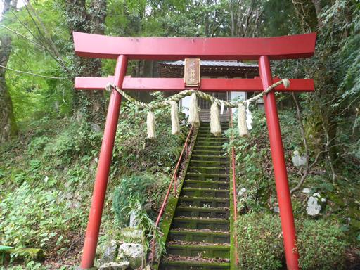
登山開始。さっそくキノコがお出まし。
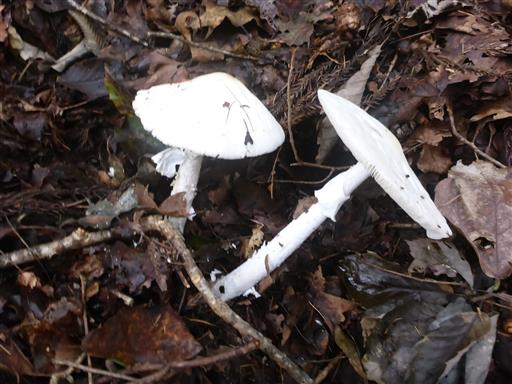
樹林帯の中の平凡な道が続く。
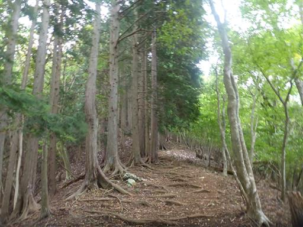
天狗岩の標識。寄り道して行ってみることにする。
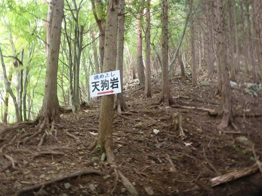
天狗岩に到着。
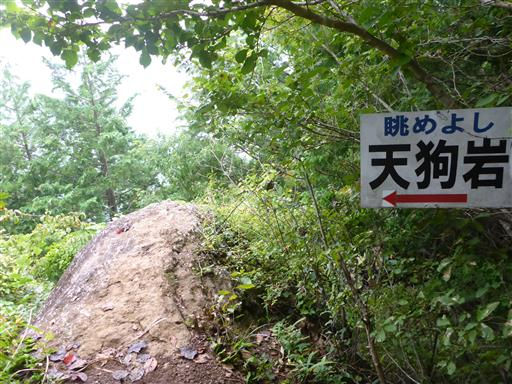
ほとんど何も見えない。本日は東に比べ西の方はそこそこ晴れそうな予報だったが
期待は完全に裏切られてしまった。
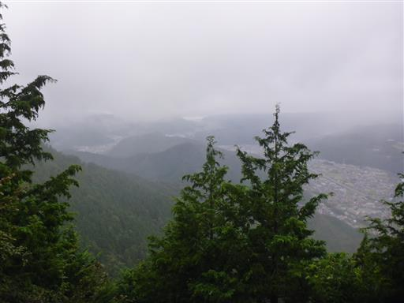
急斜面の登りが続く。
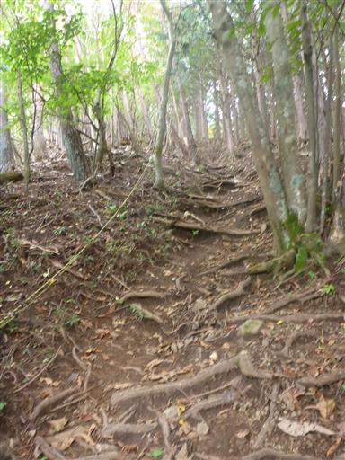
あっという間に九鬼山に到着。標高970ｍ。
13年振りの訪問だ。13年前にはなかったベンチが設置されている。
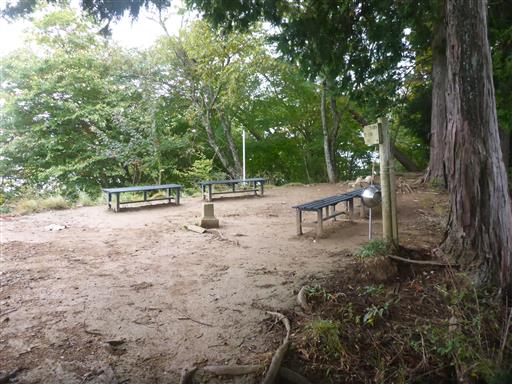
もちろん、ここも展望は全くなし。
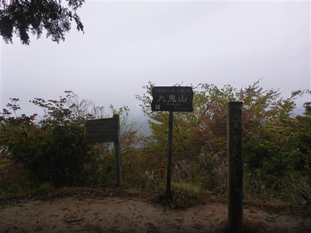
山頂も少し雲に覆われだす。展望がなく疲れてもいないので、少しの休憩で出発する。
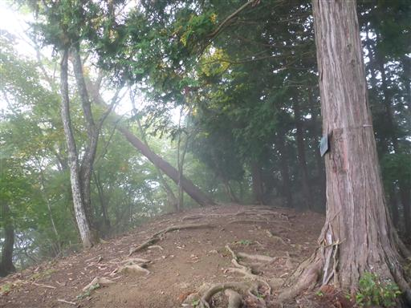
ここからは痩せた尾根道を北上する。
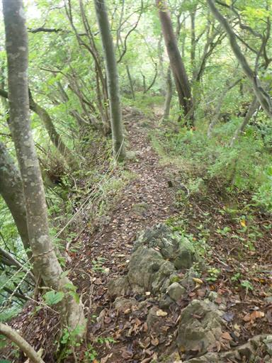
少し歩きにくいトラバース道。
雨が降ってきたが木々の葉がさえぎってくれるおかげであまり濡れない。
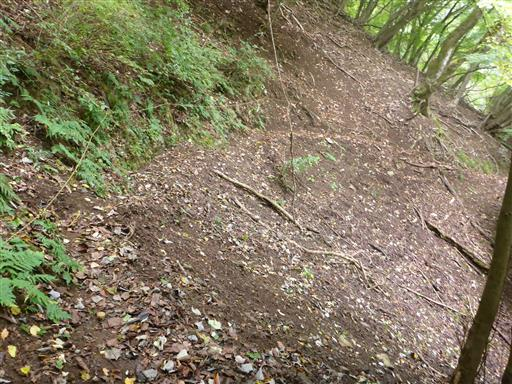
登山道は緩やかな広い尾根になる。アップダウンがほとんどなく非常に歩きやすい。
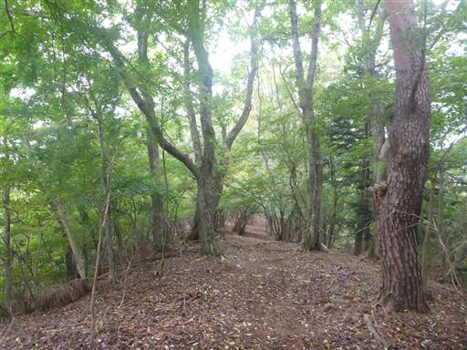
鉄塔の残骸のようなものが立っている。
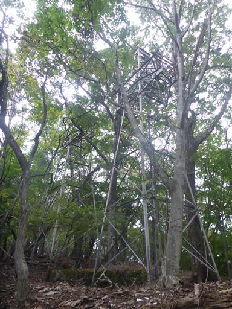
札金峠に到着。
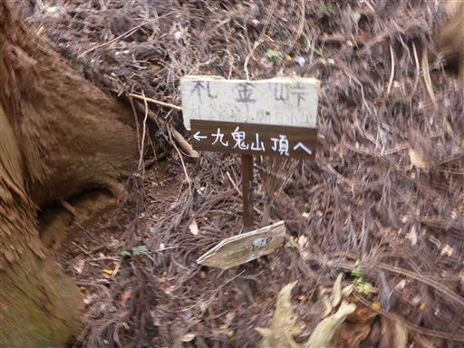
植林地帯の中のなんとも陰気な峠だ。
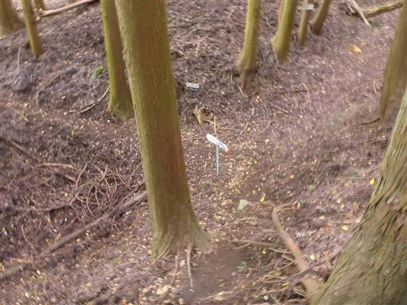
一登りで馬立山に到着。尾根の途中にある小ピークだ。
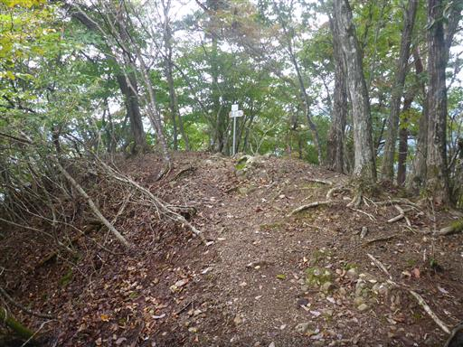
この辺りは滑りやすい斜面。トラロープの他に鎖まで設置されている。
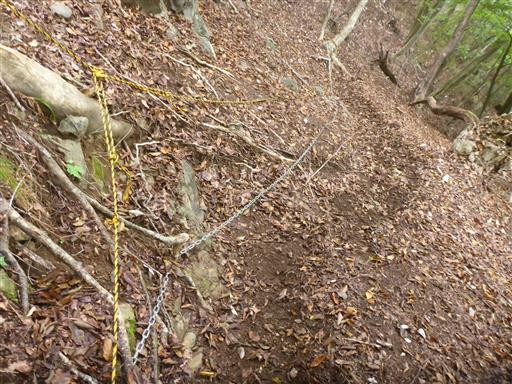
御前山に近づくと、大きな岩が見えてくる。
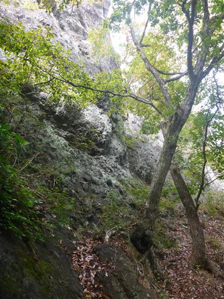
御前山に到着。標高730m。
ここに来るのは6年振りだ。
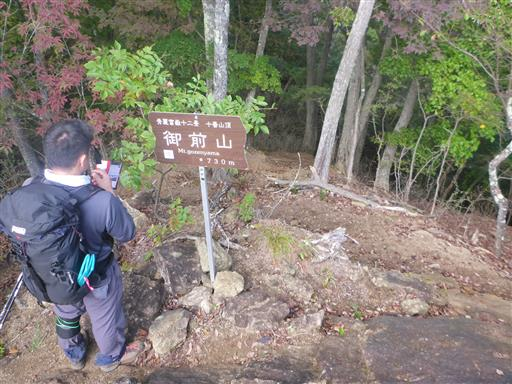
山頂はごつごつとした岩場。右側は絶壁だ。
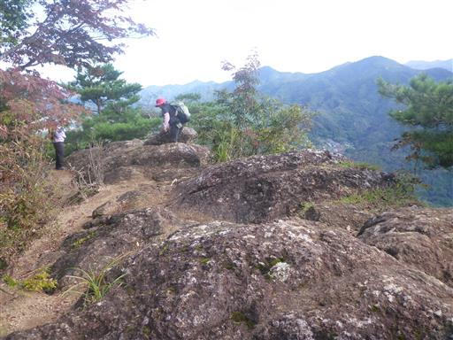
山頂からの展望。東側は良く晴れている。
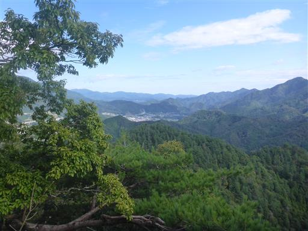
北側の展望。右端に見えるのが九鬼山だ。
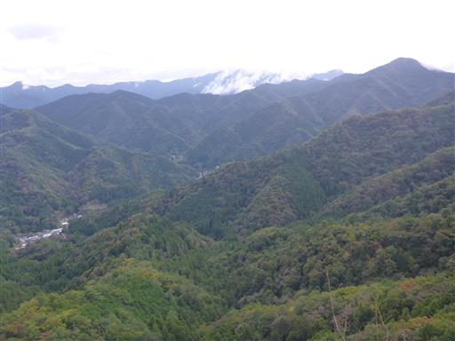
ゆっくり昼食をとったら出発。あとは猿橋駅に下山するのみだ。
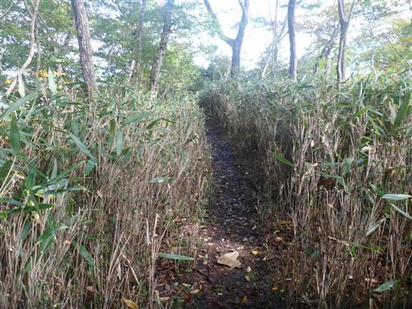
神楽山に立ち寄る。
下山ルートから少し外れた場所にあり、足を延ばしてみたが何もない山頂だ。
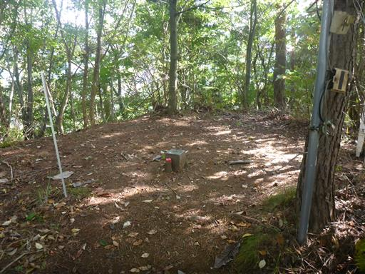
下山道はそこそこ急斜面。とはいえ低い山なので楽々だ。
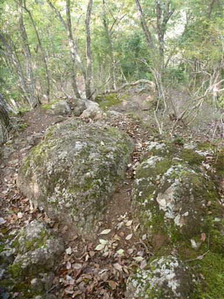
下山。あとは車道を駅まで歩くのみ。
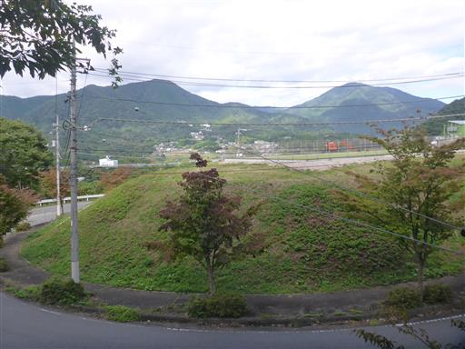
猿橋駅に到着。標高330m。
比較的軽い登山で少々歩き足りなかったが、良いリハビリ登山になった。
後半は天候も少し回復してきて、少しでも展望が得られてよかった。
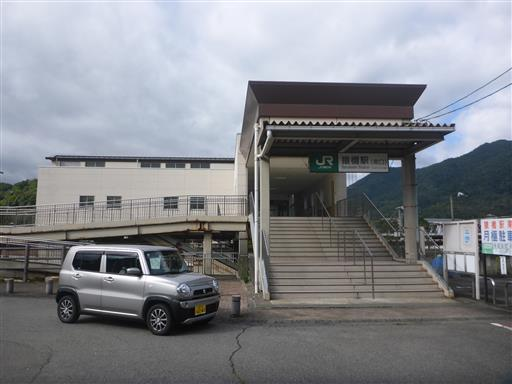